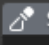
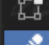

3D Animasyon ve Modelleme
Organik karakter heykelleme (sculpting), temiz topoloji kurulumu (retopology), mekanik ve organik rigging (iskeletlendirme) ile ağırlık-zamanlama odaklı 3D hareket çalışmaları gerçekleştiriyorum.

ÇİZGİ FİLM VE ANİMASYON • 4. SINIF PORTFOLYOSUÇizgi Film ve Animasyon bölümü 4. sınıf öğrencisiyim. Üretim sürecimin merkezinde 3D Animasyon ve Modelleme, Konsept Çizim ve Karakter Dizaynı yer alıyor. Geleneksel kare kare (cel) animasyon dinamiklerinden 3 boyutlu organik heykel (sculpting) ve mekanik iskelet (rigging) kurulumlarına kadar tüm görsel anlatım aşamalarında özgün eserler üretiyorum.

3D Modelleme • Konsept Çizim • Karakter Dizaynı

Ana Uzmanlık ve İlgi Alanlarım Tamamı Orijinal El Çizimi ve 3D Stüdyo ÜretimiOrganik karakter heykelleme (sculpting), temiz topoloji kurulumu (retopology), mekanik ve organik rigging (iskeletlendirme) ile ağırlık-zamanlama odaklı 3D hareket çalışmaları gerçekleştiriyorum.
Hikâye evrenlerinin atmosferini, karakterlerin kostüm ve aksesuar detaylarını, renk paletlerini ve görsel dilini belirleyen orijinal konsept paftaları tasarlıyorum.
Karakterlerin anatomik silüetlerini, mimik ifadelerini (expression sheet), dönüş paftalarını (turnaround) ve kare kare geleneksel 2D cel animasyon döngülerini çiziyorum.
Kare kare çizilmiş 3 adet geleneksel 2D hareket, metamorfoz ve dinamik aksiyon sekansı.
Organik karakter sculpting, retopology, mekanik 4 bacaklı robot rigging ve 3D fizik/zamanlama çalışması (4 eser).
Orijinal karakter tasarım paftaları, yüz ifadesi etütleri, silüet ve kostüm araştırmaları (2 eser).
Kamera açıları, sahne geçişleri ve dramatik kurguyu birleştiren 48 saniyelik "Honeyfier Animatic" çalışması.